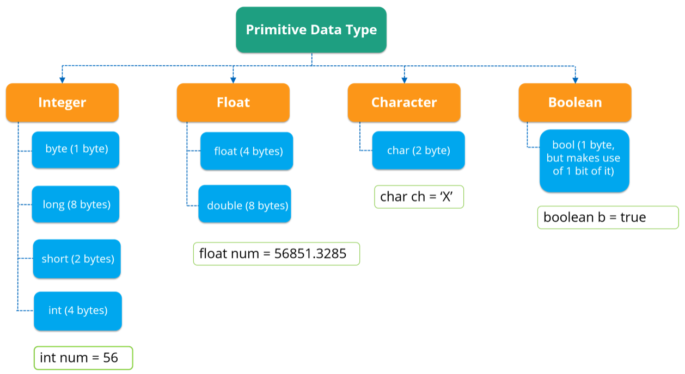

Variables
A variable is a named storage for a value. It has a name (identifier) and a type. The name identifies a variable in some context. It's possible to read and change the value of a variable by its name. The general form for declaring variables is the following:
DataType variableName;
The type (data type) of a variable determines which values can be stored in the variable and the possible operations you can perform on them.
Data types
Java is a statically typed programming language, which means that every variable and every expression has a type that is known at the compile time.
All data types are separated into two groups: primitive types and references types.
A primitive type variable stores a simple value (such as a number or character). Java has eight primitive data types. They can be divided into four groups:
- integer numbers: byte, short, int, long (for example, 83 is an integer number)
- floating-point numbers: float, double (for example, 3.1415 is a floating point number)
- logical type: boolean (true or false)
- characters: char (for example, 'a', '3') The most used primitive types are int, long, boolean, char and double. primitiveDataTypes

A reference type variable stores an address in memory where the data is located. The data can be made up as a complex structure that includes other data types as their parts.
We will often use the reference type String. It represents a sequence of characters like "abc" or "Hello, Java".
Let's declare a variable named number of the type int:
int number;
Here is a variable named text of the type String:
String text;
Sizes and ranges of primitive types
Integer types store numbers such as 10, 15, -14. The size of the values that can be stored depends on the integer type that we choose. The range of values is calculated as −(2n−1) -2^(n-1) to 2^(n−1)−1, where n is the number of bits. The range includes 0 as well.
- byte: the size is 8 bits (1 byte), the range is from -128 to +127
- short: the size is 16 bits (2 bytes), the range is from -32768 to +32767
- int: the size is 32 bits (4 bytes), the range is from −(2^31) to +(2^31)-1
- long: the size is 64 bits (8 bytes), the range is from −(2^63) to +(2^63)-1
Floating-point types represent numbers with a fractional part.
- float: the size is 32 bits (4 bytes), the range is from 3.4e−038 to 3.4e+038 (approximately, 6-7 significant decimal digits)
- double: the size is 64 bits (8 bytes), the range is from 1.7e−308 to 1.7e+308 (approximately, 14-16 significant decimal digits) The character type (char) stores the character constant in the memory. The size is 16 bits (2 bytes). The range is from 0 to 65536 (unsigned).
The boolean type can store only two values: true or false. It represents only one bit of information, but its size is not something that's precisely defined.
So, remember Java has 8 primitive types. The most used are int, long, boolean, char, and double.
The assignment operator Java has a special operator denoted as =. It assigns a value to a variable.
In this case, the variable has to be declared already:
variableName = value;
It is also possible to declare and initialize a variable in one line:
DataType variableName = value;
class Task {
public static void main(String[] args) {
// put your code here
int one = 1; // declares an integer variable "one" and assigns the value 1 to it
int two; // declares an integer variable "two"
two = 2; // assign the value 2 to the variable "two"
int three = 3, four = 4; // declares two integer variables and assigns values to them
}
}
To read the value of a variable you should write its name.
For example, let's print the variables:
System.out.println(one); // prints 1
System.out.println(two); // prints 2
System.out.println(three); // prints 3
System.out.println(four); // prints 4
In the following example, the variable five is declared and initialized with the value of another variable:
int five = four; // read the value of the variable "four" and assign it to the variable "five";
Here are some more variables:
char ch = 'A'; // declare a character variable named "ch" and assign 'A' to it
String str = "Hello, Java"; // declare a string variable named "str" and assign text to it
double pi = 3.1415; // declare a double variable named "pi" and assign 3.1415 to it
For more details about variables go here : https://docs.oracle.com/javase/tutorial/java/nutsandbolts/variables.html
Rules for naming variables
Java has some rules for naming variables:
- names are case-sensitive
- a name can include Unicode letters, digits, and two special characters ($, _)
- a name can't start with a digit
- a name must not be a keyword (class, static, and int are illegal names) You cannot break these rules, otherwise, your program will not compile.
Here are some legal names of variables:
number, $ident, bigValue, _val, abc, k, var
And here are some illegal ones:
@ab, 1c, !ab, class
Ever since Java 9, the single character _ is an illegal way to name a variable, but _a and __ are legal names.
Naming conventions for variables
Also, there are naming conventions for naming variables:
- if a variable name has a single word it should be in lowercase (for instance: number, val)
- if a variable name includes multiple words it should be in lowerCamelCase, i.e. the first word should be in lowercase and each word after the first has its first letter written in uppercase (for instance: numberOfCoins)
- variable names should not start with _ or $ characters, even though both are allowed
These conventions are not required, but it is strongly recommended to follow them. They make your code more readable for yourself and other Java programmers.
Input and output in Java code
There are several ways to read values from the standard input. The first way is to use java.util.Scanner.
Let's read two integer numbers from the standard input, add them together and write the result in the standard output:
import java.util.Scanner;
public class Task {
public static void main(String[] args) {
Scanner scanner = new Scanner(System.in);
int a = scanner.nextInt(); // it reads an integer value from the standard input
int b = scanner.nextInt(); // it reads another integer value from the standard input
System.out.println(a + b); // it writes the result of a + b in the standard output
}
}
Another common way to read integer numbers is to use java.io.BufferedReader.
Let's read two integer numbers, add them together and write the result in the standard output again:
import java.io.BufferedReader;
import java.io.InputStreamReader;
import java.io.IOException;
public class Task {
public static void main(String[] args) throws IOException {
// the object for reading
BufferedReader reader = new BufferedReader(new InputStreamReader(System.in));
// it takes a string and splits it by whitespaces
String[] values = reader.readLine().split("\\s+");
int a = Integer.parseInt(values[0]); // It converts the first value to integer
int b = Integer.parseInt(values[1]); // It converts the second value to integer
System.out.println(a + b);
}
}
IDE tips & tricks
Code autocompletion can help you to find the right variable. Once declared, a variable is added to the autocompletion list. Just start typing or simply press Ctrl + Space to get a list of all the options.